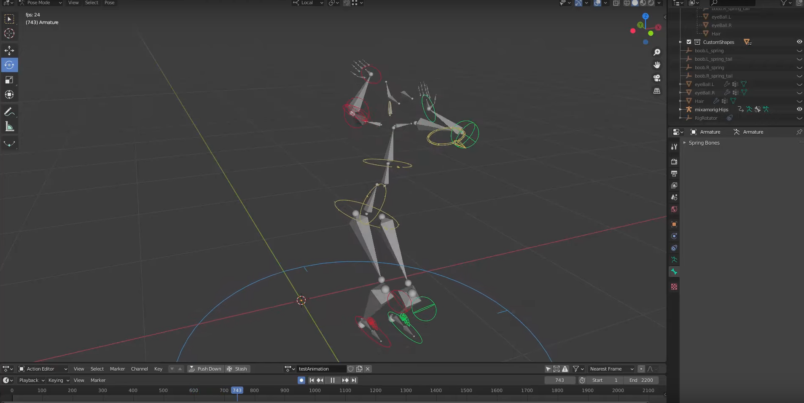

Chapter 2 (Blender)
In chapter 2 we will cover how to use Rokoko Studio and the suits with Blender. I am going to link below the Rokoko Official playlist of videos that covers the workflow in Blender, but I will advise to please look at the dates of the videos since they're not the best company to have an organized list of videos with the newest workflows. Make sure you check the description or comments to see if it states that the workflow is outdated with a link to a newer video because I have run into workflow issues to realized it is an outdated video.
No video url found - vimeo and youtube supported
This playlist has videos covering livestreaming the motion capture from Rokoko Studio straight into Blender, but I would highly advise against this workflow because it isn't well developed enough. Also recording in Rokoko Studio gives you access to filters that help improve your motion capture data so at this point it is in your best interest to record in Rokoko Studio and then export using the settings brought up in the videos to another program such as Blender.
This second video is created by a great youtuber who has made informative rigging content. Although this video is a few years old, it covers a good workflow for cleaning up the motion capture data that comes out of Rokoko Studio. I brought up filters that help with the motion capture data within Rokoko Studio but there will always be a need to clean up the motion capture. Make sure you have a good IK rig for the motion capture data because this will determine the quality of the motion capture data in Blender as well as how easy it will be to work with.
Lastly, make sure you're not running off the most recent version of Blender unless this version fixes issues for Rokoko Studio that were broken in pervious Blender builds. Too many times I have updated to the newest version of a 3D program only for Rokoko Studio to break completely or the workflow to change significantly because of a bug or new features.
Internal link: Let's go to Chapter 3